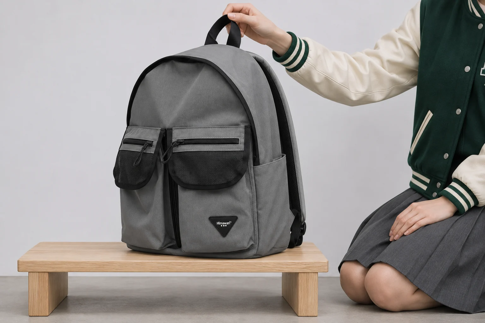
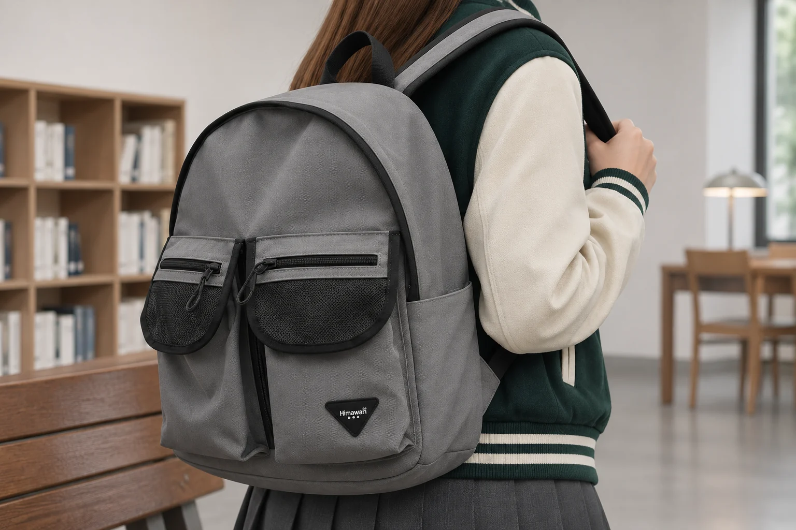
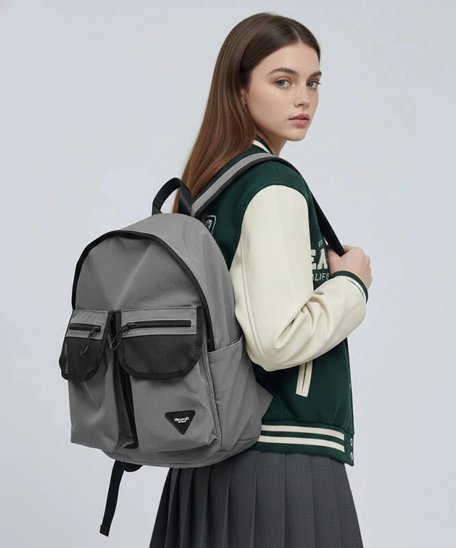

백팩을 내려놓으면 앞으로 기울 때 어디부터 볼까

백팩을 벗어 벤치에 세웠는데 앞 포켓 쪽으로 기울면 손잡이를 놓기 어렵습니다. 잠깐 받쳤다가 들어 올리는 곳이라면 큰 불편이 아닐 수 있습니다. 하지만 포켓을 열 때마다 한 손으로 가방을 붙잡아야 한다면 짐을 꺼내는 일이 번거롭습니다. 가방을 꾹 눌러 세우기 전에 두 곳을 봅니다. 가방을 놓은 면에 바닥이 고르게 닿는지 먼저 확인하고, 앞 포켓에 넣은 짐 가운데 위치를 바꿔 볼 물건을 하나 고릅니다.
히마와리 No.1230 그레이의 제품표에는 외부 크기가 가로 32 × 세로 40 × 폭 18cm로 적혀 있습니다. 공개 상품 사진에는 앞에 나란히 놓인 두 포켓의 어두운 윗부분과 회색 몸체가 보입니다. 18cm는 가방 바깥쪽 폭입니다. 가방 바닥이 선반에 얼마나 닿을지, 내 짐을 담은 뒤에도 스스로 서 있을지는 놓는 자리에서 따로 확인합니다. 앞 포켓의 배치는 사진으로 보고 바닥이 닿는 자리는 실제로 놓아서 봅니다.
먼저 확인할 곳은 벤치와 바닥이 만나는 자리
기울어지는 방향을 보려면 가방을 책상 끝에 맞추지 말고 넓고 평평한 면에 놓습니다. 낮은 벤치를 쓴다면 좌판 끝이 둥글게 깎였는지, 판재 사이가 벌어져 있는지도 봅니다. 가방의 앞쪽 바닥이 둥근 모서리에 걸치면 뒤쪽만 받친 상태가 됩니다. 같은 가방도 벤치 안쪽으로 옮겼을 때 바닥이 더 넓게 닿을 수 있습니다. 매끄러운 곳에서는 밑에 겹친 어깨끈 하나 때문에 한쪽이 올라갈 수 있으니 끈을 몸체 밖으로 빼 두고 봅니다.
한 손으로 손잡이를 받친 상태에서 본체가 처음 기울어지는 쪽을 보면 무엇부터 확인할지 정하기 쉽습니다. 바닥이 놓인 면과 평행한데 앞쪽이 천천히 내려가는지, 바닥 한 모서리가 처음부터 들려 있는지는 구분해 봅니다. 기울어진 가방을 그대로 손에서 놓고 떨어뜨릴 필요는 없습니다. 같은 짐으로 평평한 곳과 평소 벤치에서 한 번씩 비교하면 놓인 면을 바꿔도 가방이 기우는지 알 수 있습니다. 한 장소에서만 기울면 가방 안의 짐을 전부 옮기기 전에 놓는 자리를 먼저 바꾸면 됩니다.

앞 포켓을 비웠을 때 기울기가 줄어든다면
가방을 받친 채 바깥 포켓에서 가장 묵직한 물건 하나만 꺼냅니다. 다른 짐은 그대로 둔 채 같은 자리에 다시 놓아 봅니다. 여러 칸을 한꺼번에 비우면 좋아진 이유를 판단하기 어렵습니다. 앞쪽에서 꺼낸 뒤 가방이 덜 기울면 그 물건을 같은 포켓에 계속 넣어 두는 게 평소 사용 방식에 맞는지 생각해 볼 수 있습니다. 자주 꺼내는 물건이라면 가방을 무리하게 세우려 하기보다 넓은 면에 받쳐 놓고 여는 방법도 있습니다.
단단하고 묵직한 물건을 몸체 안쪽으로 옮겼다면 그 물건이 가방 속 어디에 닿는지도 확인합니다. 책 한 권을 안쪽에 넣어도 옆에 단단한 원통형 물건이 비스듬히 놓이면 바닥 한 부분에 힘이 모일 수 있습니다. 옮긴 뒤에는 다시 겉모양과 포켓 입구를 살펴보세요. 앞 포켓의 부피가 줄었지만 손잡이나 지퍼를 잡는 동작이 불편해졌다면 가방을 세우는 자세만 보고 짐 자리를 정하기 어렵습니다. 출근길에 세워 놓는 시간과 그 물건을 꺼내는 횟수를 같이 떠올려 보세요.
앞에 포켓이 두 개 보이는 가방이라도 무게를 맞추겠다고 양쪽에 무거운 물건을 하나씩 넣을 필요는 없습니다. 좌우가 비슷해지더라도 두 물건이 모두 몸체 앞에 있으면 가방이 여전히 앞으로 기울 수 있습니다. 반대로 앞쪽이 안정됐는데 한쪽으로 기운다면 이번에는 무거운 물건이 어느 쪽에 모여 있는지 봅니다. 어느 방향으로 기우는지 먼저 살핀 뒤 한 물건씩 옮기면 같은 짐으로 무엇이 달라졌는지 확인하기 편합니다.
가방을 다시 세워 볼 때는 내용물이 다른 쪽으로 넘어가지 않도록 손잡이를 잡고 몸체를 천천히 돌립니다. 바닥의 한쪽 끝이 먼저 닿아 기울었다면 놓는 동작도 결과에 영향을 줬을 수 있습니다. 같은 방향으로 한 번 더 내려놓으면서 이번에는 바닥 양쪽이 거의 동시에 닿게 해 보세요. 내려놓자마자 기우는지, 짐을 꺼내느라 지퍼를 당길 때만 기우는지도 봅니다. 언제 기우는지 알면 본체를 받칠 손을 언제 써야 할지 정하기 쉽습니다.

비워도 가방이 기운다면 놓는 방식을 바꿉니다
앞 포켓과 몸체를 비웠는데도 그 자리에서 가방이 기울 수 있습니다. 내용물을 뺐을 때 바닥이 납작하게 펴지는 가방도 있고, 세워 놓은 모양이 그대로 유지되지 않는 가방도 있습니다. 이것만으로 가방의 상태를 단정하기는 어렵습니다. 평소 자주 쓰는 칸을 열 수 있는지, 손잡이가 바닥에 깔리지 않는지 확인하며 놓는 방향을 정해 보세요. 눕힐 때에는 밖으로 튀어나온 장식이나 지퍼 손잡이가 바닥에 눌리지 않는 면을 고릅니다.
밖에서 잠깐 멈춰 물건을 꺼낼 때는 넓고 평평한 자리가 없을 수도 있습니다. 벤치가 좁다면 본체를 내 쪽으로 받쳐 들고 한 칸만 열거나, 앉은 상태에서 가방을 무릎 위에 받칠 수 있습니다. 가방을 어느 면으로 두든 열린 포켓의 입구가 바닥을 향하면 작은 물건이 빠질 수 있으니 방향을 바꾸기 전에 지퍼부터 확인합니다. 내려놓은 뒤 손을 떼어도 가방이 어떻게 놓이는지 살피세요. 다시 들기 전에 열어야 할 포켓이 있다면 그 입구가 눌리지 않는 쪽으로 가방을 둡니다. 같은 벤치를 계속 쓴다면 짐을 꺼내고 지퍼를 닫은 뒤 바로 들 수 있는 자세를 한 번 찾아 두면 편합니다.